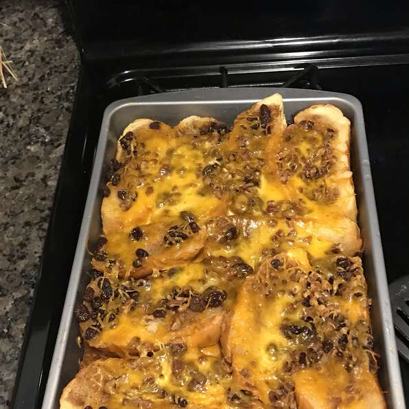

CAPIROTADA

Description
This recipes comes from mexican country. There is no additional information to describe it. But its ingredients and its cooking steps are given below.
Ingredients
- 3 cups water
- 3 cups brown sugar, divided
- 2 cinnamon sticks
- 2 cups butter, softened
- 2 loaves sliced white bread, toasted
Once you get the ingredients, follow the steps below to cook it
Steps
- Preheat oven to 350 degrees F (175 degrees C).
- Combine water, 2 cups brown sugar, and cinnamon sticks together in a saucepan; bring to a boil. Reduce heat and simmer, stirring occasionally,
until sugar is dissolved and liquid has reduced into a syrup, about 15 minutes. Remove cinnamon sticks from syrup using a slotted spoon.
- Spread butter onto each toasted bread slice. Make 1 layer of buttered bread in a deep casserole dish or oven-proof stockpot.
Sprinkle cinnamon, nutmeg, and cloves over bread layer. Sprinkle 1/4 the raisins, 1/4 the peanuts, 1/4 the remaining brown sugar, and 1/4 the Cheddar cheese over bread layer. Repeat layering with remaining ingredients. Pour cinnamon syrup over entire dish; cover with aluminum foil.
- Bake in the preheated oven until cooked through, about 30 minutes. Cool for 20 minutes before serving.
Get back to the main page